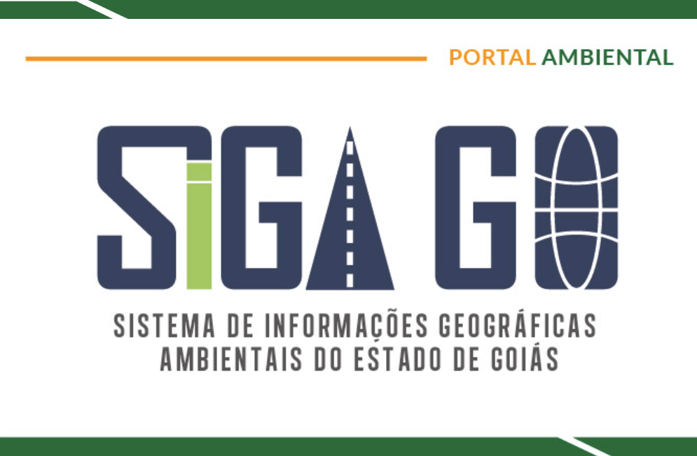
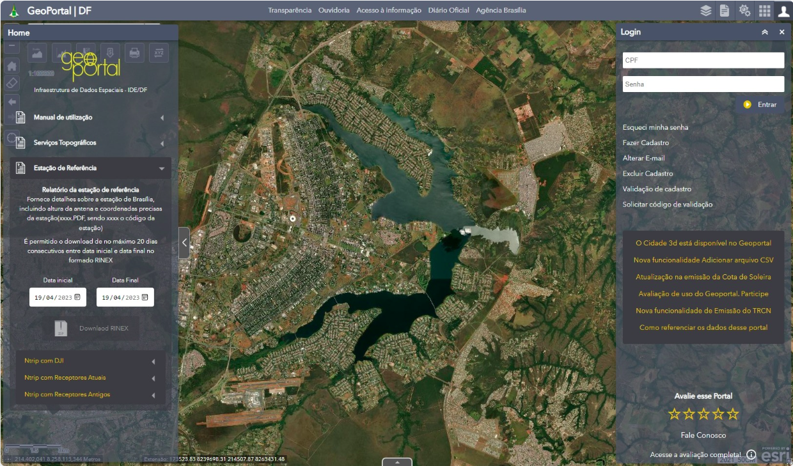
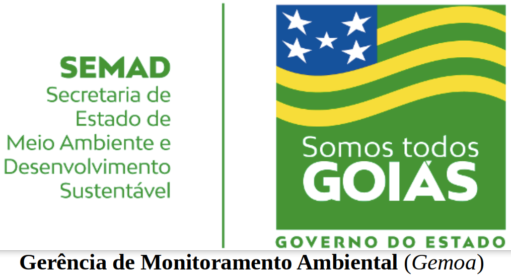

Sistema de Informações Geográficas Ambientais do Estado de Goiás - SIGA GO
Portal WebGIS de dados ambientais da Secretaria de Estado de Meio Ambiente e Desenvolvimento Sustentável - SEMAD do Governo do Estado de Goiás.
A Portaria 85/2020 - SEMAD instituiu o Sistema de Informações Geográficas Ambientais do Estado de Goiás (SIGA-GO).
Ferramentas utilizadas:
- Python + Django, Desenvolvimento WEB
- GeoNode, GeoServer, MapServer, SGDB, SIG
- WMS, WFS, Metadata, ISO 19115, Perfil MGB, EDGV, ET-EDGV
- Compliance, DataDriven, Política de Dados Abertos
- Gestão Ambiental, Gestão de Projetos
Aplição do projeto:
Idealização e implantação da Infraestrutura de Dados Espaciais Ambientais (IDE-A) como repositório oficial de Informações Ambientais no Estado de Goiás, materializado com a criação do Portal do Sistema de Informações Ambientais do Estado do Goiás - SIGA-GO.
Com o objetivo de promover adequada sistematização, padronização, divulgação e uso de informações geoespaciais oriundas das atividades, programas e projetos ambientais e de recursos hídricos desenvolvidos pela Secretaria de Estado de Meio Ambiente e Desenvolvimento Sustentável. Facilitando o consumo das informações por diversos públicos: pela população, área académica, empresas e Governo (Federal e Estaduais).
APRESENTAÇÃO SIGA-GO

GeoPortal
Chefe de núcleo e Gerente do banco de dados Geográfico da Secretaria de Urbanismo de Brasília
Assessorando a Coordenadora de Geoprocessamento ao implantar o NoCentral da INDE com a ferramenta WEB-GIs nomeada de GeoPortal-DF.
Ferramentas utilizadas:
- ESRI: ArcGIS, ArcMAP, ArcGIS PRO, ArcSDE, ArcGIS Server, Portal for ArcGIS, entre outros
- InfraEstrutura: Dimensionamento, Escalonamento, Instalação, Configuração
- Windos Server 2012 e 2016
- PostgreSQL, PostGIS, Oracle, ArcSDE, DBA, ETL
- Madelagem de Banco de Dados e de Banco de Dados Geográficos
- Urbanismo, automação/atualização do IPTU
- Infraestrutura de Dados Espaciais do Distrito Federal
- Automação/atualização do IPTU no Distrito Federal
- Cadastro Territorial Multifinalitário-CTM
- Lei de Uso e Ocupação do Solo-LUOS
Aplição do projeto:
GeoPortal - DF

Criação do Banco de Dados Geográfico unificado para Gestão Ambiental-GO
Modelagem e criação do repositório oficial de Dados Geográfico da SEMAD-GO.
Aplicação de estratégia para disponibilidade da base com interoperabilidade.
Ferramentas utilizadas:
- PostgreSQL, PostGIS, ETL, SGBD, DBA
- Modelagem de Dados, Interoperabilidade, Automação
- GeoServer, MapServer, SIG, QGis, ArcGIS
- Vetorização, Georreferenciamento, Sensoriamento Remoto
- Levantamento de Requisitos, DataDriven, Data Warehouse
- Gestão Ambiental, Gestão de Pessoas, Gestão Pública, Gestão de Projetos
Aplição do projeto:
Foi modelado e criado um repositório de dados e dados Geográficas que seria utilizado para subsidiar as análises e estudos envolvendo a temática ambiental. Tornando público o projeto de unificação e interoperabilidade das bases de dados utilizadas (dados externos) e também os produzidos pelos gestores e analistas ambientais no território de Goiás (dados oficiais da SEMAD-GO).
Essa base foi padronizada e disponibilizada por meio de padrões de interoperabilidade, aumentando assim a transparência da gestão pública. Os dados são disponibilizados via Publicação WEB em diversos formatos para disponibilização interna e externa a Secretaria. Facilitando o consumo e utilização dos dados ambientais por diversos usuários, ferramentas e sistemas dentro e fora da SEMAD-GO

Desenvolvimento Back-End Senior
Desempenhar atividades correlatas as atividades de Desenvolvimento WEB Back-End no projeto CMR-FUNAI quando colaborador da Empresa HEX-360
Ferramentas utilizadas:
- Python
- Django, Django REST, Django REST Framework, GeoDjango
- Django ORM, PostgreSQL, ETL
- Teste Unitário, PEP8, Docstring, Swagger
- DevOps, GitLab, GitHub, DevOps, Docker, DockerCompose
- Infraestrutura, Integração, Automação, Engenharia Reversa
- Metodologia Ágil, Ferramentas de Gestão de Projeto (Microsoft Project, Jira, Trello)
- VsCode, Notbook
Aplição do projeto:
Realizar manutenção, melhorias, correções e desenvolvimento no Portal CMR-FUNAI em Python com Django.
Migração de funcionalidades e ferramentas (aplicando melhorias ao otimizar regras de negócio e modelagem de novo banco de dados) ao desenvolvimento da versão 2 do Portal CMR-FUNAI Python com Django.
Configuração e melhorias de ambiente com Docker e DockerCompose.
Desenvolvimento Front-End
Desempenhar atividades correlatas as atividades de Desenvolvimento WEB Front-End no projeto CMR-FUNAI quando colaborador da Empresa HEX-360
Ferramentas utilizadas:
- VueJS, Vue Leaflet, NuxtJS, AngularJS, JavaScript
- GitLab, GitHub
- Docker, DockerCompose
- Infraestrutura, Integração
Aplição do projeto:
Realizar manutenção, melhorias, correções e desenvolvimento no Portal CMR-FUNAI em HTML, JavaScript e AngularJS.
Migração de funcionalidades e ferramentas (aplicando melhorias ao otimizar regras de negócio) ao desenvolvimento da versão 2 do Portal CMR-FUNAI em VueJS + NuxtJS.

FIFA Futebol
Dashboard com a base FIFA 2023 dos jogadore de futebol e seus times.
Ferramentas utilizadas:
- Python com foco em análise de dados, ETL
- Visualização de Dados: Matplotlib, Seaborn, Streamlit
- Streamlit Cloud, Github
- Pensamento Estratégico
Aplição do projeto:
Link do Dashboard
Food Delivery Company
Projeto de compania de Entrega por Delivery, produzido no decorrer do curso FTC realizado na ComunidadeDS.
Ferramentas utilizadas:
- Python com foco em análise de dados, ETL
- Visualização de Dados: Matplotlib, Streamlit
- Streamlit Cloud, Github
- Pensamento Estratégico
Aplição do projeto:
Link do Dashboard
Templat WEB: Projeto Django
Utilizando a tecnologia de containers com Docker, este templete para projetos WEB já configurado e padronizado com as melhores práticas de desenvolvimento. Neste repositório é utilizando a tecnologia Django com banco de dados PostgreSQL e ambiente que suporta dados em formato geográfico. GIS + Docker
Ferramentas utilizadas:
- Python
- Django, Django Admin, Django REST, Django REST Framework
- PostgreSQL, Django ORM, GeoDjango
- Teste Unitário, PEP8, Docstring, Swagger, Autenticação JWT
- GitHub, Docker, DockerCompose
Aplição do projeto:
As etapas de criação e configuração de um ambiente de desenvolvimenot WEB pode ser algo trabalhoso, principalmente quando se utiliza diversas técnologias ao implementas as boas praticas de desenvolvimento.
O proposito desse projeto é fornecer um ambiente funcional e configurado para ser utilizado na criação de projetos WEB Django pela comunidade.
Digitalização e Espacialização de processos e bases de dados da SEMAD-GO
Transcrição de processos físicos para meio digital, por meio de técnicas de geoprocessamento e computação, para compor o projeto de unificação e interoperabilidade das bases de dados na SEMAD-GO.
Ferramentas utilizadas:
- BPM, BizAgi Model, XMind, Mapeamento Mental e Brainstorming
- SIG, QGis, ArcGIS
- Vetorização, Georreferenciamento, Sensoriamento Remoto
Aplição do projeto:
Digitalização, vetorização e geoespacialização de elementos do meio físico (processos, dados, planilhas, etc) para criação de Camadas de Apoio complementando a base do Banco de Dados Geográfico unificado de Gestão Ambiental de Goiás. Podendo ser consumido de forma ampla e direta, permitindo fácil acesso aos dados e possibilidade de análise conjunta dos dados por meio da ingestão de dados.
Além disso os processos da Mapoteca SEMAD-GO puderam ser transcritos do meio físico para meio digital, com devida adequação ao incorporar o Sistema Eletrónico de Informações - SEI.
Emissão de laudos de Informações Ambientais
Desburocratização e otimização dos fluxos processuais internos na SEMAD-GO.
Implantando a Cultura DataDriven na Gestão Pública com melhorias significativas nas análises dos processos inerentes a gestão ambiental no estado de Goiás.
Ferramentas utilizadas:
- BPM, Análise Estatisca e Espaciais
- Inteligência analítica, Geração de Insights
- Series Temporais, SIG, QGis, Produção de Mapas
- Vetorização, Georreferenciamento, Sensoriamento Remoto
- Gestão Pública, Transparencia Pública,
- Gestão Projetos, Monitorando Ambiental, Gestão de Pessoas, Gestão Ambiental
Aplição do projeto:
Utilização de inteligência analítica e espacial (sobre o território) ao analisar processos e entregar um compilado das análises em formato de Laudo Geoespacial, que consistiam em mapas temáticos a resolução do solicitado em despachos juntamente com relatórios informacionais (feito com o cruzamento de diversas informações estruturadas).
O objetivo era facilitar a interpretação na tomada de decisão do objeto de análise que concistia o processo em trámite. Entregando um produto investigativo padronizado, com análise de dados e series temporais de sensoriamento remoto. Agindo como elemento complementar a dicisão final baseada em dados (DataDriven) das áreas finalisticas em diversas atuações: fiscalização, autuações, recursos hídricos, Unidade de Conservação, decisões judiciais, etc.
Emissão Remota de Autuações Ambientais
Implantação de nova metodologia de Autuação Fiscalizatória Ambiental para adoção na fiscalização estadual.
Com o auxílio das imagens de satélite, são realizados autuações de ilicitos ambientais de forma remota. Aprimorando a gestão pública, resultando na otimizando os fluxos processuais internos na SEMAD-GO, minimizando custos ao Estado e riscos aos servidores públicos, entregando resultados assertivos em maior número num curto período de atuação.
Ferramentas utilizadas:
- BPM, Análise Estatisca e Espaciais
- Inteligência analítica, Geração de Insights
- SIG, QGis, Sensoriamento Remoto, Produção de Mapas
- Gestão/Fiscalização/Monitoramento Ambiental, Gestão Pública
Aplição do projeto:
Seja advinda de denuncias, demandas processuais ou por analise (remota, presencial) do território, as detecções das possíveis áreas qualificadas como ilícitos ambientais se transformam em alvos, objetos de análise.
No alvo observado ocorre a identificação e validação de mudanças do território por meio de interpretação visual de imagens de satélite na utilização de técnicas de Sensoriamento Remoto. Os especialistas realizam um extenso trabalho de investigação ao cruzar diversas informações contidas nos robustos repositórios definidos em fluxo processual interno para cada tipologia de investigação.
Após confirmação é lavrado a autuação pelos fiscais especialistas da Gerência de Monitoramento Ambiental-GEMOA, de forma remota, do escritório. A autuação é encaminhada via correspondência AR ao infrator.
Aerolevantamento com Drones nas ações Fiscalizatórias
Utilização de Aerolevantamento com Drones em ações Fiscalizatórias e de Desastres Ambientais.
Ferramentas utilizadas:
Aplição do projeto:
Utilização de drone na visita de áreas de difícil acesso.
Entrega de images de altíssima resolução para análises de áreas críticas.
Criação de Modelagem Digital de Terreno e de Superficie (MDT e MDS), na geração de insigths nas análises.